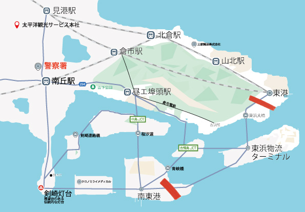
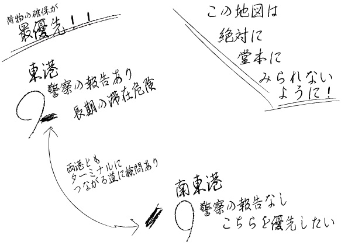

この度は周遊型イマーシブサスペンス『密行喩送』にご参加いただきありがとうございます。エンディングの読了をもってこの物語は終わりとなります。
もっとも到達する可能性の低い、エンディングK『密行喩送』に辿り着きました。
あなたは細い幸運の糸を手繰り寄せ、間接的に2つの犯罪組織を検挙しました。
一人の少女が救われただけでなく、未来にあり得ただろう被害者たちもまた、あなたによって救われたのです。
ここでは、あなたが到達したこの結末が、いかにしてなりたっていたかについて整理し、解説にかえさせていただきます。
どうぞ落ち着ける場所でご覧ください。池袋PARCOには、素敵なお食事処やカフェもございます。
ただし、感想などを同行者様とお話をされる場合にはお気をつけください。各フロアには、いまもまだ物語の最中にいらっしゃるゲストがいるかもしれません。そんな人々の楽しみを奪ってしまわないように、周囲へのご配慮を。また、キャラクターたちにも、声をかけたりしないように、お願い致します。
あなたは、理由はどうあれ大金ほしさにアルバイトに応募してきた人物でした。本来あなたが依頼人から請け負うはずだった仕事は「輸送」──90分で報酬100万円という、破格の運び屋の仕事です。しかし、当日現場についてから、依頼人である三航輸送の藤岡は突如「運ぶ予定だった荷物が奪われ、仕事が無くなった」と告げ、代わりに潜入調査の仕事を依頼しました。
それからあなたは、三航輸送のこともスーツケースのことも詳しく分からないまま、太平洋観光サービスという別の組織へと潜入し、彼らが使用している暗号を解読することになります。そのままであれば、あなたの結末は「依頼人からの仕事を完遂するか否か」に限られていました。
ですが、道中で声をかけてきた警察官・海老原の存在が、あなたの置かれた状況を整理する鍵になります。海老原もまた、状況の全てを理解していたわけではありませんでしたが、詳しく話すことで、少なくとも次のような事実を知ることができました。
海老原がもたらしたどの情報が、あなたを最終的な選択へと動かしたのかは、あなただけの物語です。ただ、あなたはそこで「警察の検問を利用する」という方針を固めたはずです。
検問がどこに敷かれていたかは、シイナから渡された地図と、その説明によって示されました。
この地図上の赤いマーカーは、シイナがあなたと出会う直前に知った警察の検問設置場所です。
二つの港の近くには検問があり、このどちらかを通過させることで、間接的に少女を保護することができます。しかし、輸送ルートのゴールをどちらの港に誘導したとしても、検問で捕まるのは太平洋観光サービスだけであり、三航輸送が罰せられることはありません。
では、どうすれば２つの犯罪組織を摘発する結末へと至れるのか。
それを考える上で重要になるのが、やはりシイナのもたらした情報です。シイナの台詞、そして渡された地図の裏面の情報を、改めて整理してみましょう。
東港
・警察の報告あり
・長期の滞在危険
東南港
・安全
両港ともターミナルにつながる道に検問あり
また、シイナから口頭で「三航輸送が待機している港の近くで騒ぎが起きたら、三航輸送は撤退する」と説明されます。よって、どちらをゴールに設定しても、「検問を通る以上、太平洋観光サービスだけが検挙され、三航輸送は逃げてしまう」と考えられます。
つまり、情報をまとめると次のようになります。
＋
ここから導かれる結論はこうです。
三航輸送を捕まえるためには、東港に長期滞在させる必要がある。
しかし、東港を太平洋観光サービスのゴールにすると、近くの検問で太平洋観光サービスだけが検挙され騒ぎがおき、三航輸送には逃げられてしまう。
では、どうすれば「二つの組織を同時に検挙できるか」。
その答えが、次のルート設定です。
つまり、「二つの組織に、別々の港（ゴール）を教える」必要があるのです。
ここで立ちはだかるのが、「報告は堂本の直筆でなくてはならず、メモは破損させてはいけない」という条件です。これは、シイナ経由で藤岡の意向として伝えられており、単純なメモ偽造を難しくしています。
そこで鍵になるのが、あなたか同行者の手に握られていた、ある一本のペンです。
藤岡が渡してきた、フリクションペン──「ボールペンでありながら、あとから文字を消すことができるペン」です。
このペンの性質を思い出すことができれば、「あとから一部だけを消すことで、二つの組織に別々のゴールを伝える」という発想に辿り着けたはずです。これが、あなたが掴み取るべき最初の幸運でした。藤岡が「消せるものは便利で好きだ」と用意した道具が、最終的には本人にとって不都合な方向へ働いたのです。
残る課題は、そのフリクションペンをどうやって堂本に使わせるか、という点です。これについても、物語の中にはいくつかのチャンスが用意されています。
堂本は会話冒頭、メモを取る際に「インクの出が悪いな」と呟きます。このとき、フリクションペンの性質に気づいていれば、「良ければこちらをお使いになりますか？」と自然に差し出すことができたはずです。
仮にこのタイミングを逃したとしても、堂本のインクが少ないペンは、その後もどんどん消費されていきます。あなたが最長ルートに向けて指示を出していけば、メモする内容も増え、「東浜物流ターミナル」を書き終えたあたりで、本当にインクが尽きてしまうでしょう。そのとき堂本は、あなたに「ペンをお貸しいただけませんか？」と尋ねてきます。
これが二つ目の幸運です。堂本が大量にメモを取りたがる癖が、「インク切れ」という状況を生み出したのです。
「消せるものを好む人物」と「消えない記憶を重視する人物」。
この対照的な二人が持っていた２つのペンこそ、あなたが気づき、手繰り寄せるべき幸運でした。
こうして、フリクションペンで最後の「東南港」という言葉をルートに書かせ、太平洋観光サービスを東南港近くの検問へと向かわせます。そのうえで、三航輸送にメモを渡す直前に、フリクションペンで「南」の字だけを消し、「東港」と書かれているように偽装することで、三航輸送を東港へ向かわせます。
その結果、二つの組織はそれぞれ別の場所で警察に遭遇し、同日に検挙されます。そして、少女は保護され、未来に起こり得たはずの被害までもが、あなたの選択と幸運によって防がれたのでした。
あなたが密行喩送に成功したことによって、２つの犯罪組織が壊滅し、罪のない少女は親元に戻りました。今後は、海外での日本人の失踪事件も、不可解な誘拐事件も減少することになるでしょう。
全てはあなたの注意深い洞察力と判断、そして幸運を掴み取る機転の賜物です。
しかし、まだ分からないこともあるのではないでしょうか。
本公演はリピート参加が可能です。内容自体は変わりませんが、あなたが誰に、何を聞くのか、何を知りたいと思うのか、それ次第で見え方は大きく変わります。
また行動を変えることで自身の目で、新たな結末に到達できるかもしれません。
藤岡の依頼を意図的に失敗するか、あるいは「プロ」として依頼を完遂すれば、また別の結末をその目で見届けることができるはずです。
リピート参加の際は、初回と同様にチケットをご購入のうえ、公演開始前に受付でリピート参加である旨をお伝えください。
また、本公演は公演期間終演後、物語の真相やキャラクター設定を含めた全解説を、ご登録いただいたLINEにてすべてのアルバイト参加者の方へと公開する予定でございます。具体的な公開時期は、後日ご連絡を申し上げます。
改めて、この度は『密行喩送』にご参加いただき、誠にありがとうございました。
あなたがこの体験を通して、この結末を手にしたことを喜んでいただけたなら、制作一同これ以上の幸福はございません。
改めて、この度は周遊型イマーシブサスペンス『密行喩送』にご参加いただき誠にありがとうございました。
本公演をお楽しみいただけた際には、ぜひ感想の発信やシェアで応援していただけると嬉しく思います。
ただし、登場人物名や劇中アイテムなど、物語の核心に触れる要素はネタバレに該当するため、SNS等への投稿はお控えください。
以下に、投稿可能な内容の一例を記載しました。感想を共有される際は、こちらの範囲をご参照ください。